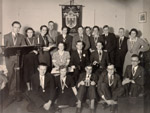

De verandering waargenomen
A.E. Cohen als historicus en universitair bestuurder
Tentoonstelling in de Universiteitsbibliotheek te Leiden, van 28 november 2003 tot en met 4 januari 2004.
Tentoongestelde stukken
4. Studie in Leiden: Sodalicium Literis Sacrum
Meer dan in het Studentencorps vond Cohen genoegen in de disputen. Met name in Literis hield hij geregeld voordrachten en was hij een streng beoordelaar van de bijdragen van zijn dispuutgenoten. Een thans eveneens negentigjarige, dispuutgenote van toen, herinnert zich met afgrijzen de serieuze mannelijke dispuutleden: ging zij zonder vrees bij een hoogleraar op bezoek, ze `deed het bijna in haar broek’ als ze een voordracht voor haar dispuutgenoten moest houden. Behalve in Literis was Cohen in het Historisch Dispuut Robert Fruin actief. Beide disputen benoemden hem tot erelid.
| 4.1. Voor Literis gehouden voordracht `Over Historische Grootheid’. [AEC] | |
| 4.2. Toespraak in het Latijn: presidiale verwelkoming van de nieuwe leden. [AEC] | |
| 4.3. Twespraeck den Sodales nu ter tyt
wesende aneghaende. [AEC]
¶ Tweespraak van Dolf Cohen en Ella Nolen, zomer 1934. |
|
|
4.4. Notulenboek Literis. [Literis] |
|
|  | 4.5. Inauguratie 1939-1940. [mw. A. Frank-van Westrienen] |
|
4.6. Leidsche lier : keur uit lyrische en verhalende bijdragen
verschenen in de jaren 1935 - 1945 in het weekblad Virtus Concordia
Fides en den Almanak van het Leidsche Studentencorps. - Leiden :
Stenfert Kroese, 1946. [AEC]
¶ Het boek ligt open bij twee gedichten van Dolf Cohen. |
|
 |
|
| 4.7. Lint gedragen door de Literisleden. De bestuursleden kregen als extra onderscheidingsteken een zilveren uiltje van Minerva [mw. A. Frank-van Westrienen] | |
| 4.8. Erelidmaatschapsbul, verleend op 26
september 1940. [AEC] |
|
| 4.9. Gelukwens van Literis, geschreven door F.W.N. Hugenholtz, met Cohens huwelijk, 19 juni 1945. [AEC] |
| vorige pagina | volgende pagina |